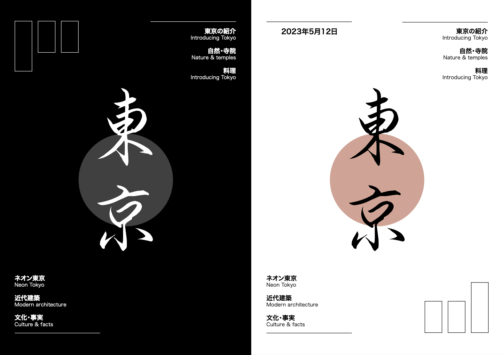
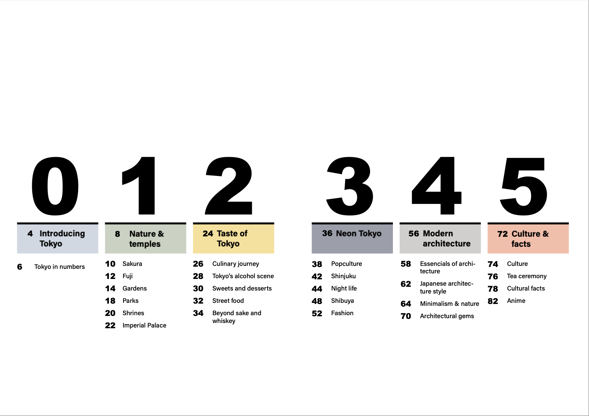
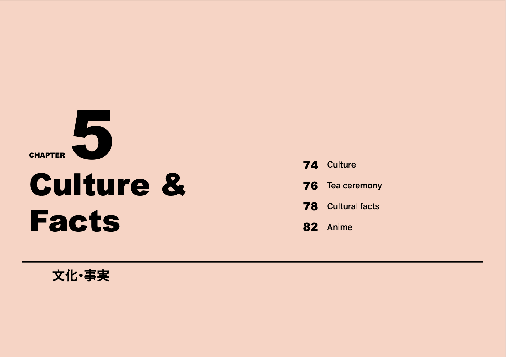
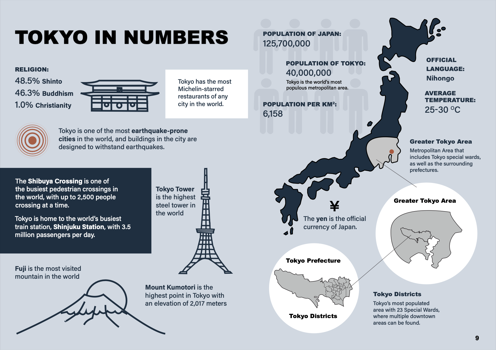
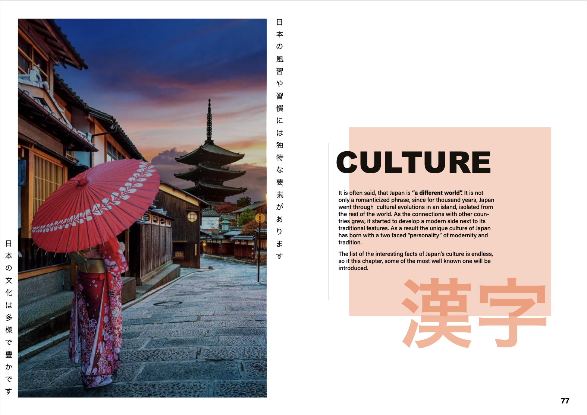
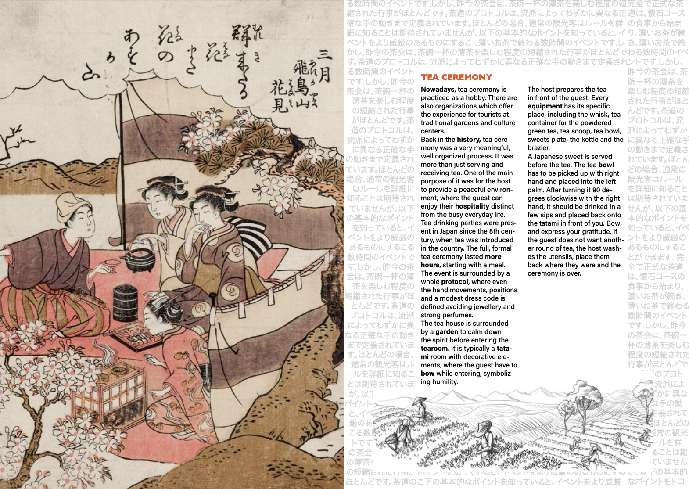
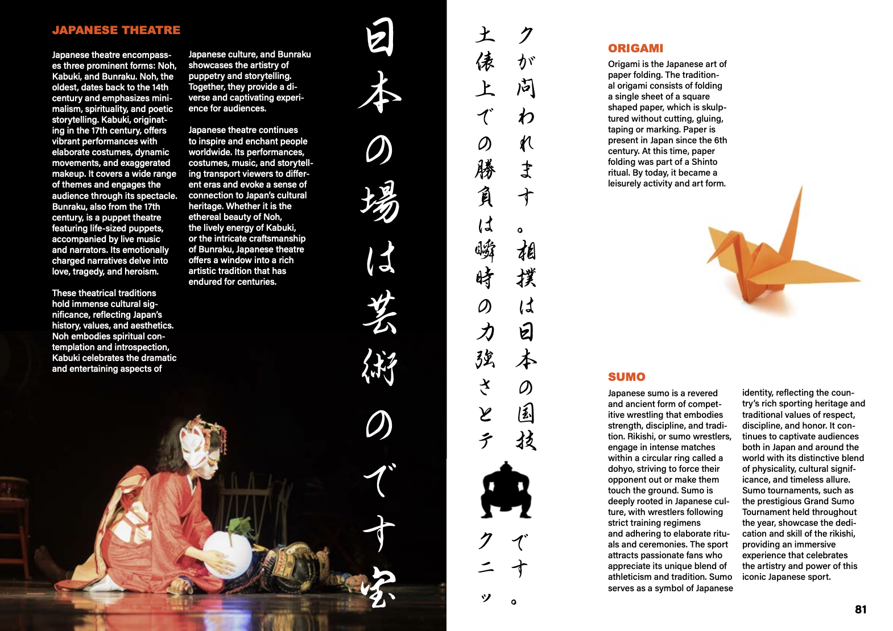
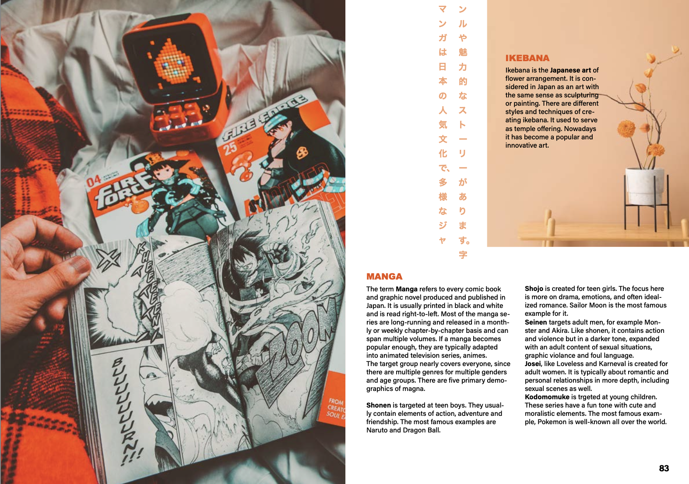
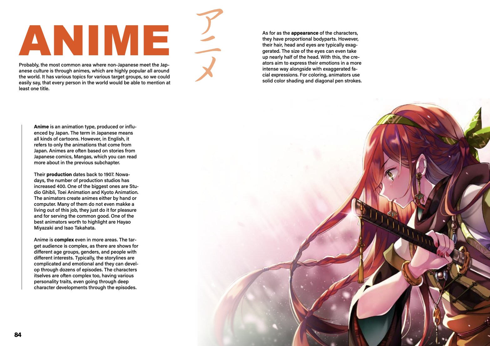
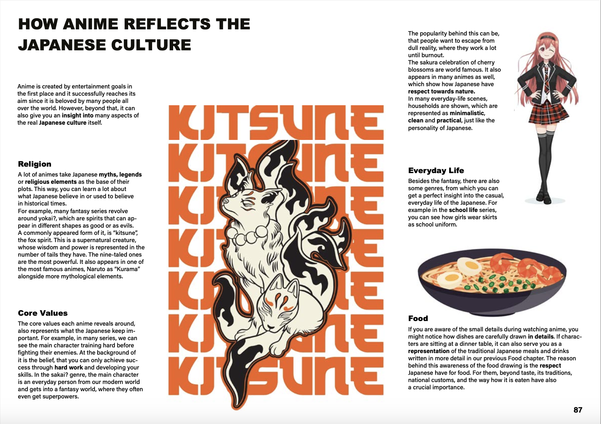

Magazine Project

This group project was a great opportunity to try out working with print. It was a different kind of experience, than any other digital design, since we had to pay attention of for example how the colours will look different after printing or what the texture of the paper should be. But I believe, it is also useful to have experience in this field of graphic design to widen your skillsets.
Front and Back Cover

Chapters
Each chaper has its own colour theme, which is reflected on the chapter-introduction pages, the main colour of the pictures and title colours.


Infographics
As an introduction, the magazine starts with basic facts of Tokyo, represented via infographics.

Some pages from the "Culture" Chapter





